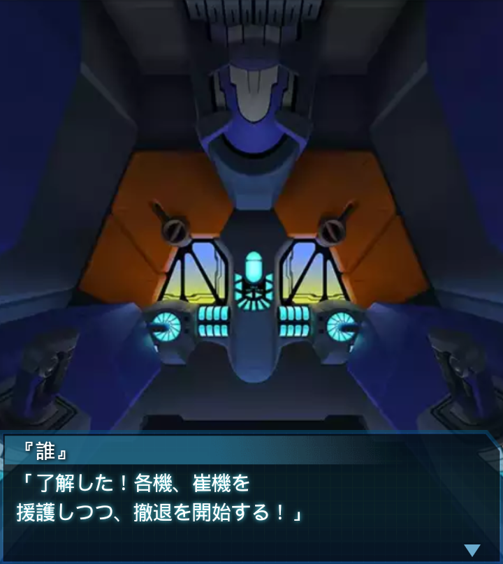

南アフリカ・ベン＝エティーブNR2
イーフェイ
「『誰』大尉！！
横の通路！気をつけて！
突撃級よ！」
『誰』
「ああ。わかってる。……ッ！
バオフェン１！後方より、
ＢＥＴＡ多数！気をつけろ！」
『誰』
「…中尉から離れろ化け物共ッ！」
イーフェイ
「…謝謝。助かったわ。私ってば
見事に押し倒されちゃったわね。
ＢＥＴＡに」
『誰』
「その減らず口を聞くと
安心するよ、全く…。
怪我はないか？」
イーフェイ
「私は大丈夫だけど、機体が
片腕になっちゃったわ。
でも、まだ戦える！」
『誰』
「その意気だ。
最後までついて来い」
イーフェイ
「了解！って言いたい所だけど
ＢＥＴＡに挟まれちゃったわね」
イーフェイ
「後方は私達が抑えるから、
大尉は先に行って！」
『誰』
「しかし、その機体では…」
イーフェイ
「崔亦菲と、その部下達を
侮らないで欲しいわね！
片腕だって抑えてみせるわ」
『誰』
「すまない、崔中尉…。
すぐに戻る！」
イーフェイ
「了解！それじゃ行くわよ！
バオフェン中隊の恐ろしさ！
味わいな、ＢＥＴＡ共！」
『誰』
「よし、施設の調査終了だ！
無事か、バオフェン１！
崔中尉！！」

イーフェイ
「こちら、バオフェン１。
無事だけど小破状態でこれ以上の
戦闘は不可能かも…」

『誰』
「了解した！各機、崔機を
援護しつつ、撤退を開始する！」
『誰』
「兵器使用自由！思う存分
中から施設をぶっ壊してやれ！」
「――了解！！」
『誰』
「ファング中隊達、Ｂ部隊は外で
無数のＢＥＴＡを抑えている！
急いで戻るぞ！」